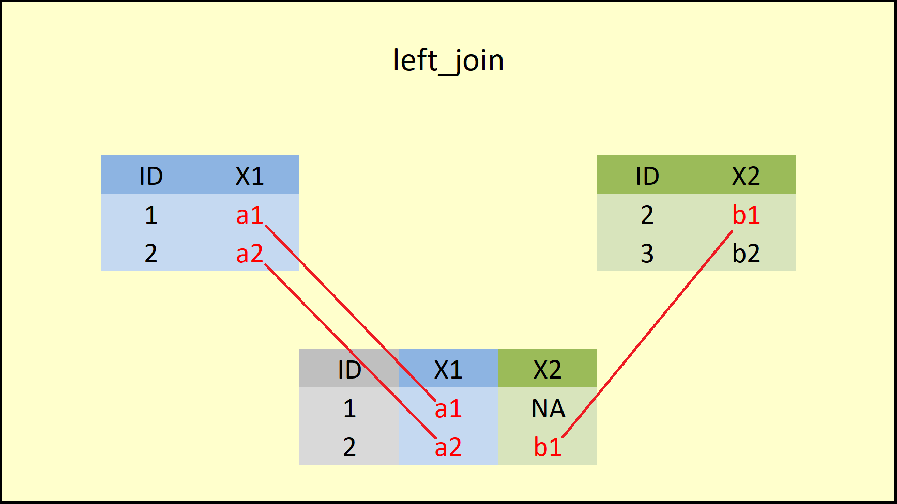
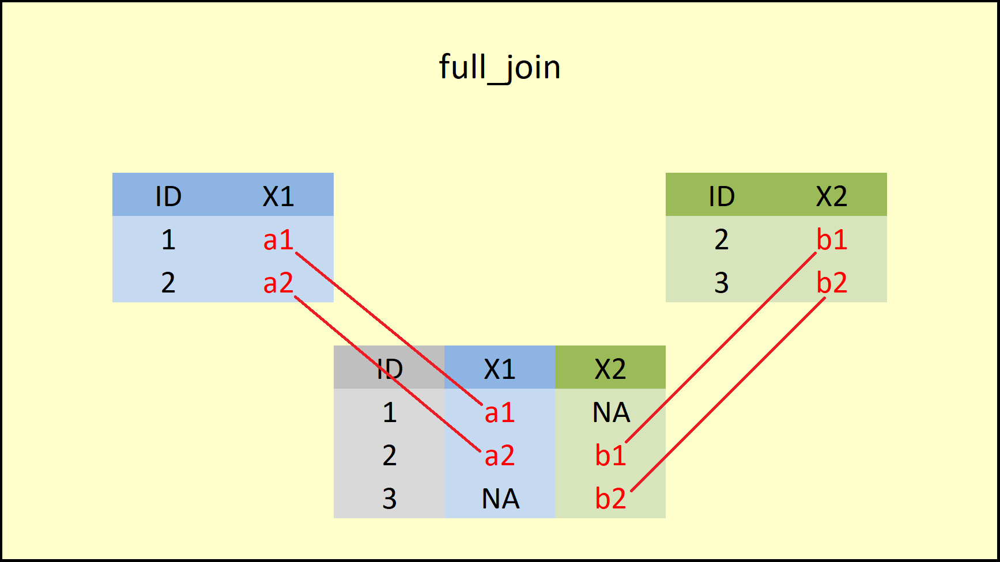
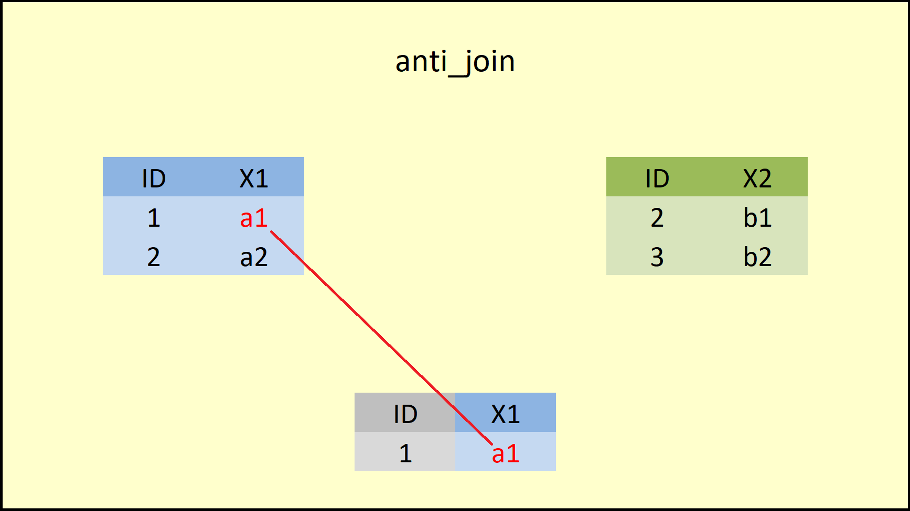

Veri analizi sırasında, genellikle yalnızca belirli sütunlarla çalışmak ya da analiz için gereksiz sütunları veri setinden çıkarmak gerekebilir. R dilinde, sütun seçimi ve yönetimi için en yaygın kullanılan araçlardan biri, dplyr paketinin sunduğu select() fonksiyonudur. Bu fonksiyon, kolay ve esnek bir şekilde sütunları seçmeyi, sıralamayı veya hariç tutmayı mümkün kılar.
select() fonksiyonunu kullanırken yalnızca sütun isimlerini belirterek seçim yapabilirsiniz. Ayrıca, sütun seçim işlemini kolaylaştırmak için çeşitli yardımcı fonksiyonlar da kullanılabilir. Bu yardımcı fonksiyonlar, sütun adlarını desenlere, pozisyonlara veya belirli kurallara göre seçmeyi sağlar.
Örnek Veri: starwars Veri Seti
Bu eğitimde, sütun seçimi işlemlerini öğrenirken, dplyr paketinde yer alan starwars veri setinin ilk 5 satırı ve ilk 6 sütunundan oluşan bir alt kümesini kullanacağız. Bu veri seti, sütun seçim işlemlerini göstermek için çeşitli veri türlerini ve isimlendirme desenlerini içeren harika bir örnek sağlar.
Aşağıdaki adımlarda, hem belirli sütunları seçme hem de sütunları hariç tutma işlemlerini nasıl gerçekleştireceğimizi öğrenirken yukarıda bahsedilen yardımcı fonksiyonları pratikte göreceğiz.
# Gerekli paketin yüklenmesi# install.packages("dplyr")library(dplyr)# Örnek veri seti oluşturmadf<-starwars[1:5, 1:6]# starwars veri setinin ilk 5 satırını ve ilk 6 sütununu seçerek bir alt küme# oluşturur ve bunu df adlı bir nesneye atar.# Veri setini görüntülemedf# Bundan sonra df veri seti kullanılacaktır.
# A tibble: 5 × 6
name height mass hair_color skin_color eye_color
<chr> <int> <dbl> <chr> <chr> <chr>
1 Luke Skywalker 172 77 blond fair blue
2 C-3PO 167 75 <NA> gold yellow
3 R2-D2 96 32 <NA> white, blue red
4 Darth Vader 202 136 none white yellow
5 Leia Organa 150 49 brown light brown
Starwars Veri Seti
starwars veri seti, Star Wars evrenindeki karakterlerin fiziksel özelliklerini ve kimlik bilgilerini içeren bir veri setidir. Bu veri seti, çeşitli değişkenlerle karakterlerin boy, kilo, saç rengi gibi fiziksel özelliklerini ve göz rengi gibi detaylarını sunar. Seçilen veri seti (ilk 5 satır ve ilk 6 sütun), aşağıdaki değişkenleri içerir:
name: Karakterin adı.
height: Boy ölçümlerini içerir (santimetre).
mass: Kilo ölçümlerini içerir (kilogram).
hair_color: Saç rengini içerir.
skin_color: Ten rengini içerir.
eye_color: Göz rengini içerir.
select() fonksiyonu, bir veri çerçevesinden belirli sütunları seçmek veya hariç tutmak için kullanılır. Sütun seçimi, hem sütun isimleri hem de sütunların konum/indeks bilgileri kullanılarak yapılabilir.
R’da Köşeli Parantez
R’de [ işareti, bir nesne içinden belirli elemanları seçmek için kullanılan bir alt kümeleme operatörüdür. Veri çerçeveleri, matrisler, vektörler ve listeler üzerinde alt kümeleme yapmak için kullanılır.
Vektörlerde Alt Kümeleme:
# Bir vektör oluşturmav<-c(10, 20, 30, 40)# Tek bir eleman seçmev[2]# Sonuç: 20 (2. eleman)
[1] 20
# Birden fazla eleman seçmev[c(1, 3)]# Sonuç: 10, 30 (1. ve 3. eleman)
[1] 10 30
Veri Çerçevelerinde Alt Kümeleme:
# Bir örnek data frame oluşturmadf_ornek<-data.frame( a =1:3, # Birinci sütun: 1, 2, 3 b =4:6# İkinci sütun: 4, 5, 6)# 1. satıra erişimdf_ornek[1, ]# 1. satır
a b
1 1 4
# "a" sütununa erişimdf_ornek[, "a"]# "a" sütunu
[1] 1 2 3
# İlk 2 satır ve "a", "b" sütunlarına erişimdf_ornek[1:2, c("a", "b")]# İlk 2 satır, "a" ve "b" sütunları
a b
1 1 4
2 2 5
2.1.1.1 İsimle Seçim (By Name)
Bir veri seti üzerinde çalışırken, select fonksiyonu içinde seçmek istediğiniz sütunları belirtebilirsiniz. Sütun isimlerini tırnak işaretleriyle (") veya tırnak işareti olmadan yazabilirsiniz. Tek bir sütun ya da birden fazla sütunu seçmeniz mümkündür.
Belirli Sütunların Seçilmesi
# Gerekli paketin yüklenmesilibrary(tidyverse)# Star Wars veri setinden alt küme oluşturmadf<-starwars[1:5, 1:6]# Belirli sütunların seçimidf_2<-df%>%select(name, height)# Yalnızca "name" ve "height" sütunlarını seçer.# Yeni veri setini görüntülemedf_2
# A tibble: 5 × 2
name height
<chr> <int>
1 Luke Skywalker 172
2 C-3PO 167
3 R2-D2 96
4 Darth Vader 202
5 Leia Organa 150
Pipe Operatörü Nedir ve Nasıl Çalışır?
Pipe operatörü (%>%), R programlama dilinde bir işlemin sonucunu otomatik olarak bir sonraki işleme girdi olarak aktarır. Bu operatör, özellikle veri manipülasyonu işlemlerini daha okunabilir, düzenli ve anlaşılır hale getirmek için kullanılır. Pipe, bir işlemden gelen veriyi diğerine “aktararak” adım adım bir işlem zinciri oluşturmayı sağlar.
Neden Kullanılır?
Kod Okunabilirliğini Artırır: Pipe operatörüyle yazılmış kodda, işlemler sırasıyla ve kolayca takip edilebilir. Bu, özellikle uzun ve karmaşık veri işleme süreçlerinde büyük bir avantaj sağlar.
Ara Değişkenleri Ortadan Kaldırır: Pipe kullanımı, her işlem sonucu için ayrı bir değişken tanımlama ihtiyacını ortadan kaldırır, böylece kod daha sade hale gelir.
Adım Adım İşlem Zinciri Kurar: Birden fazla işlemi arka arkaya uygulamak gerektiğinde pipe operatörü ile bu işlemler kolayca zincirlenir.
Nasıl Çalışır?
Pipe operatörü, bir nesneyi (örneğin bir veri çerçevesini) bir fonksiyonun girdisi olarak aktarır. Bu sayede kod, “bu işlemden gelen sonucu şu işleme aktar” şeklinde yazılır. Her işlem bir öncekinin sonucunu alır ve yeni bir işlem yapar.
Özetle, pipe operatörü veriyi işlemler arasında taşımak için kullanılır ve kod yazımını hem daha kısa hem de daha anlaşılır hale getirir.
Belirli Sütun Aralığının Seçilmesi
Sütunlar arasında bir dizi seçmek için : operatörünü kullanabilirsiniz. Örneğin, height sütunundan başlayarak skin_color sütununa kadar (her iki sütun da dahil) olan sütunları seçmek isterseniz, şu şekilde yazabilirsiniz:
# Gerekli paketin yüklenmesilibrary(tidyverse)# Örnek veri setidf<-starwars[1:5, 1:6]# 'height' sütunundan 'skin_color' sütununa kadar olan sütunları seçmedf_2<-df%>%select(height:skin_color)# Bu ifade, df veri setinden "height" sütunundan başlayıp "skin_color" sütununa kadar# (her iki sütun dahil) olan sütunları seçer.# Seçilen sütunları görüntülemedf_2
# A tibble: 5 × 4
height mass hair_color skin_color
<int> <dbl> <chr> <chr>
1 172 77 blond fair
2 167 75 <NA> gold
3 96 32 <NA> white, blue
4 202 136 none white
5 150 49 brown light
2.1.1.2 İndeks ile Seçim (By Index)
Belirli Sütunların İndeks Numarası ile Seçilmesi
Sütunlar indeks (konum) numaralarına göre de seçilebilir. Bunun için select fonksiyonu içinde istenilen sütun numaralarını belirtmeniz yeterlidir. Aşağıdaki örnek, birinci, beşinci ve altıncı sütunları seçmektedir:
# Gerekli paketin yüklenmesilibrary(tidyverse)# Örnek veri setidf<-starwars[1:5, 1:6]# Belirli sütunları indeks numarasına göre seçmedf_2<-df%>%select(1, 5, 6)# Bu ifade, df veri setinden birinci, beşinci ve altıncı sütunları# indeks numaralarına göre seçer.# Seçilen sütunları görüntülemedf_2
# A tibble: 5 × 3
name skin_color eye_color
<chr> <chr> <chr>
1 Luke Skywalker fair blue
2 C-3PO gold yellow
3 R2-D2 white, blue red
4 Darth Vader white yellow
5 Leia Organa light brown
2.1.1.3 Sütunları Hariç Tutma (Drop Columns)
Belirli Bir Sütunu Hariç Tutma
select fonksiyonu, belirli sütunları hariç tutmak (çıkarmak) için de kullanılabilir. Bunun için, sütun isimlerinin önüne - sembolünü eklemek yeterlidir. Aşağıdaki örnekte, mass sütunu hariç tüm sütunlar seçilmektedir:
# Gerekli paketin yüklenmesilibrary(tidyverse)# Örnek veri setidf<-starwars[1:5, 1:6]# Belirli bir sütunu hariç tutmadf_2<-df%>%select(-mass)# Bu ifade, df veri setinden "mass" sütununu hariç tutar # ve geri kalan tüm sütunları seçer.# Seçilen sütunları görüntülemedf_2
# A tibble: 5 × 5
name height hair_color skin_color eye_color
<chr> <int> <chr> <chr> <chr>
1 Luke Skywalker 172 blond fair blue
2 C-3PO 167 <NA> gold yellow
3 R2-D2 96 <NA> white, blue red
4 Darth Vader 202 none white yellow
5 Leia Organa 150 brown light brown
Birden Fazla Sütunu Hariç Tutma
Birden fazla sütunu çıkarmak istediğiniz durumlarda, her sütun adının önüne - ekleyebilir ya da sütun adlarını içeren bir vektörün önüne - koyabilirsiniz.
# Gerekli paketin yüklenmesilibrary(tidyverse)# Örnek veri setidf<-starwars[1:5, 1:6]# Birden fazla sütunu hariç tutmadf_2<-df%>%select(-height, -mass, -hair_color)# Alternatif olarak: select(-c(height, mass, hair_color))# Seçilen sütunları görüntülemedf_2
# A tibble: 5 × 3
name skin_color eye_color
<chr> <chr> <chr>
1 Luke Skywalker fair blue
2 C-3PO gold yellow
3 R2-D2 white, blue red
4 Darth Vader white yellow
5 Leia Organa light brown
2.1.1.4 Sütunları Seçmek veya Çıkarmak İçin Yardımcı Fonksiyonlar
Belirli Bir Kelimeyi İçeren Sütunları Seçme
Belirli desenlere veya koşullara dayalı olarak sütunları seçmek için çeşitli yardımcı fonksiyonlar bulunmaktadır. Bu fonksiyonlar şunları içerir:
contains: Belirli bir kelimeyi içeren sütunları seçer.
# Gerekli paketin yüklenmesilibrary(tidyverse)# Örnek veri setidf<-starwars[1:5, 1:6]# "color" kelimesini içeren sütunları seçmedf_contains_color<-df%>%select(contains("color"))# "color" kelimesini içeren sütunları seçer.# Sonucu görüntülemedf_contains_color
# A tibble: 5 × 3
hair_color skin_color eye_color
<chr> <chr> <chr>
1 blond fair blue
2 <NA> gold yellow
3 <NA> white, blue red
4 none white yellow
5 brown light brown
Belirli Bir Metin ile Başlayan Sütunları Seçme
starts_with: Belirli bir metinle başlayan sütunları seçer.
# Gerekli paketin yüklenmesilibrary(tidyverse)# Örnek veri setidf<-starwars[1:5, 1:6]# "h" harfiyle başlayan sütunları seçmedf_starts_with_h<-df%>%select(starts_with("h"))# "h" harfiyle başlayan sütunları seçer.# Sonucu görüntülemedf_starts_with_h
ends_with: Belirli bir metinle biten sütunları seçer.
# Gerekli paketin yüklenmesilibrary(tidyverse)# Örnek veri setidf<-starwars[1:5, 1:6]# "t" harfiyle biten sütunları seçmedf_ends_with_t<-df%>%select(ends_with("t"))# "t" harfiyle biten sütunları seçer.# Sonucu görüntülemedf_ends_with_t
# Gerekli paketin yüklenmesilibrary(tidyverse)# Örnek veri setidf<-starwars[1:5, 1:6]# Son sütunu seçmedf_last_col<-df%>%select(last_col())# Veri setindeki son sütunu seçer.# Sonucu görüntülemedf_last_col
# A tibble: 5 × 1
eye_color
<chr>
1 blue
2 yellow
3 red
4 yellow
5 brown
Belirli Kelimeleri İçeren Sütunları Regex ile Seçme
matches: Regex desenine uyan sütunları seçer.
# Gerekli paketin yüklenmesilibrary(tidyverse)# Örnek veri setidf<-starwars[1:5, 1:6]# "name" veya "mass" kelimelerini içeren sütunları seçmedf_matches_name_mass<-df%>%select(matches("name|mass"))# "name" veya "mass" kelimelerini içeren sütunları regex (düzenli ifade) ile seçer.# Sonucu görüntülemedf_matches_name_mass
# A tibble: 5 × 2
name mass
<chr> <dbl>
1 Luke Skywalker 77
2 C-3PO 75
3 R2-D2 32
4 Darth Vader 136
5 Leia Organa 49
Numara Aralığı ile Sütun Seçme
num_range: Numara aralığına göre sütun seçimi yapar.
# Gerekli paketin yüklenmesilibrary(tidyverse)# Örnek veri setidf<-starwars[1:5, 1:6]# Numara aralığına göre sütun seçmedf_num_range<-df%>%select(num_range("col", 1:2))# "col1", "col2" gibi sütun isimlerine uyan numara aralığını seçer.# Ancak bu veri setinde "col1" veya "col2" isimli sütunlar olmadığı için # sonuç boş olacaktır.# Sonucu görüntülemedf_num_range
# A tibble: 5 × 0
Tüm Sütunları Seçme
everything: Veri setindeki tüm sütunları seçer.
# Gerekli paketin yüklenmesilibrary(tidyverse)# Örnek veri setidf<-starwars[1:5, 1:6]# Tüm sütunları seçmedf_everything<-df%>%select(everything())# Veri setindeki tüm sütunları seçer.# Sonucu görüntülemedf_everything
# A tibble: 5 × 6
name height mass hair_color skin_color eye_color
<chr> <int> <dbl> <chr> <chr> <chr>
1 Luke Skywalker 172 77 blond fair blue
2 C-3PO 167 75 <NA> gold yellow
3 R2-D2 96 32 <NA> white, blue red
4 Darth Vader 202 136 none white yellow
5 Leia Organa 150 49 brown light brown
Yalnızca Sayısal Sütunları Seçme
where: Belirli bir koşulu sağlayan sütunları seçer.
# Gerekli paketin yüklenmesilibrary(tidyverse)# Örnek veri setidf<-starwars[1:5, 1:6]# Yalnızca sayısal sütunları seçmedf_numeric_cols<-df%>%select(where(is.numeric))# Sadece sayısal veri tipine sahip sütunları seçer.# Sonucu görüntülemedf_numeric_cols
select() fonksiyonu yalnızca sütunları seçmek için değil, aynı zamanda sütunların sıralamasını değiştirmek için de kullanılabilir. Sütunları belirli bir düzene göre sıralamak istediğinizde, sütun isimlerini veya yardımcı fonksiyonları sırayla belirterek veri setinizin sütun yapısını yeniden düzenleyebilirsiniz.
# Gerekli paketin yüklenmesilibrary(tidyverse)# Örnek veri setidf<-starwars[1:5, 1:6]# Sütunları sıralamadf_sorted<-df%>%select(name, # İlk olarak 'name' sütunuends_with("_color"), # Sonra sonu "_color" ile biten sütunlareverything()# En son diğer tüm sütunlar)# Sonucu görüntülemedf_sorted
# A tibble: 5 × 6
name hair_color skin_color eye_color height mass
<chr> <chr> <chr> <chr> <int> <dbl>
1 Luke Skywalker blond fair blue 172 77
2 C-3PO <NA> gold yellow 167 75
3 R2-D2 <NA> white, blue red 96 32
4 Darth Vader none white yellow 202 136
5 Leia Organa brown light brown 150 49
2.1.2 Satır Filtreleme: filter
filter fonksiyonu, bir veri çerçevesindeki satırları belirli bir veya birden fazla koşula göre alt kümeye ayırmak için kullanılır. Bu fonksiyon, hem karşılaştırma hem de mantıksal operatörlerle esnek bir şekilde çalışarak, veri setinden yalnızca belirli kriterlere uyan satırları seçmeyi sağlar.
*Örnek Veri: women Veri Seti**
Bu eğitimde, filtreleme işlemlerini öğrenirken R içinde yer alan women veri setini kullanacağız. Bu veri seti, kadınlara ait boy ve kilo ölçümlerini içeren iki sayısal sütundan oluşur. Boy ve kilo arasındaki ilişkileri incelemek ve koşullara göre filtreleme işlemlerini göstermek için ideal bir örnek teşkil eder.
# Gerekli paketin yüklenmesilibrary(tidyverse)# Örnek veri çerçevesidf<-as_tibble(women)# women veri setini tibble formatına çevirir ve df nesnesine atar.# Veri çerçevesini görüntülemehead(df, 10)
women veri seti, kadınlara ait boy ve kilo ölçümlerini içeren bir veri setidir. Bu veri seti, iki sayısal değişken ile kadınların fiziksel özelliklerini sunar.
height: Kadınların boy ölçümlerini içerir (inç cinsinden).
weight: Kadınların kilo ölçümlerini içerir (pound cinsinden).
2.1.2.1 Tek Bir Koşula Dayalı Satır Filtreleme
filter fonksiyonu, bir veri çerçevesindeki satırları belirli bir koşula göre alt kümeye ayırmak için kullanılır. Bu fonksiyon sayesinde, değerlerin belirli bir değere eşit olup olmadığını, daha büyük veya küçük olduğunu, ya da belirli bir aralıkta olup olmadığını kontrol ederek veri filtreleme işlemi yapılabilir.
R’deki Karşılaştırma Operatörleri
Aşağıdaki tablo, R’deki karşılaştırma operatörlerini ve açıklamalarını içerir:
Karşılaştırma Operatörü
Açıklama
>
Daha büyük
<
Daha küçük
>=
Daha büyük veya eşit
<=
Daha küçük veya eşit
==
Eşit
!=
Eşit değil
*Belirli Bir Koşula Göre Satırları Filtreleme**
Aşağıdaki örnekte, women veri setinden height sütununda değeri 68’den büyük olan satırları filtreliyoruz. Bu işlem, yalnızca boyu belirtilen değerden daha büyük olan kadınlara ait bilgileri seçmek için kullanılır.
# Gerekli paketin yüklenmesilibrary(tidyverse)# women veri setini tibble formatına çevirmedf<-as_tibble(women)# height sütununda 68'den büyük olan değerleri filtrelemedf_2<-df%>%filter(height>68)# height sütununda 68'den büyük olan değerlerin bulunduğu satırları seçer.# Filtrelenmiş veri çerçevesini görüntülemedf_2
filter fonksiyonu, yalnızca sabit bir değere değil, aynı zamanda bir fonksiyonun çıktısına dayalı olarak da satırları filtreleyebilir. Örneğin, bir sütunun değerlerini, o sütunun ortalamasıyla karşılaştırarak filtreleme yapılabilir.
Aşağıdaki örnekte, height sütununda değeri sütunun ortalamasına eşit veya daha düşük olan satırlar filtrelenmektedir.
# Gerekli paketin yüklenmesilibrary(tidyverse)# women veri setini tibble formatına çevirmedf<-as_tibble(women)# height sütununda ortalamaya eşit veya daha düşük olan değerleri filtrelemedf_2<-df%>%filter(height<=mean(height))# height sütununda, değeri sütunun ortalamasına eşit veya daha düşük olan# satırları seçer.# Filtrelenmiş veri çerçevesini görüntülemedf_2
2.1.2.2 Mantıksal Operatörler ve Fonksiyonlarla Satır Filtreleme
filter fonksiyonu, mantıksal operatörler veya TRUE ya da FALSE döndüren fonksiyonlarla birlikte kullanılarak daha karmaşık filtreleme işlemleri yapabilir. Aşağıdaki tabloda, R’de sık kullanılan mantıksal operatörler ve fonksiyonlar açıklanmaktadır:
# Gerekli paketin yüklenmesilibrary(tidyverse)# Örnek veridf<-as_tibble(women)# 'height' sütununda değeri 65, 70 veya 72 olan satırları seçmedf_2<-df%>%filter(height%in%c(65, 70, 72))# height sütununda 65, 70 veya 72 olan satırları filtreler.# Filtrelenmiş veriyi görüntülemedf_2
Belirli Değerlere Sahip Olmayan Satırları Filtreleme
# Gerekli paketin yüklenmesilibrary(tidyverse)# Örnek veridf<-as_tibble(women)# 'height' değeri 65, 70 veya 72 olmayan satırları seçmedf_2<-df%>%filter(!(height%in%c(65, 70, 72)))# Bu ifade, height sütununda değeri 65, 70 veya 72 olmayan satırları seçer.# Filtrelenmiş veriyi görüntülemedf_2
Belirli Bir Rakamı veya Deseni İçeren Satırları Filtreleme
# Gerekli paketin yüklenmesilibrary(tidyverse)# women veri setini tibble formatına çevirmedf<-as_tibble(women)# height sütununda "5" rakamını içeren satırları filtrelemedf_2<-df%>%filter(grepl("5", height))# Bu ifade, height sütununda "5" rakamını içeren satırları seçer.# Filtrelenmiş veriyi görüntülemedf_2
2.1.2.3 Birden Fazla Koşula Dayalı Satır Filtreleme
Bir veri çerçevesinde satırları filtrelerken birden fazla koşul kullanılabilir. Örneğin, belirli bir aralıkta bulunan değerleri seçmek veya tarih aralığında veri filtrelemek gibi işlemler yapılabilir. Bunun için mantıksal operatörler kullanılır.
2.1.2.4 R’deki Mantıksal Operatörler ve Açıklamaları
İki Koşulu Aynı Anda Sağlayan Satırları Filtreleme
# Gerekli paketin yüklenmesilibrary(tidyverse)# women veri setini tibble formatına çevirmedf<-as_tibble(women)# 'height' değeri 65'ten büyük VE 68'den küçük olan satırları filtrelemedf_2<-df%>%filter(height>65&height<68)# Bu ifade, height sütununda değeri 65'ten büyük ve 68'den küçük olan # satırları seçer.# Filtrelenmiş veriyi görüntülemedf_2
# Gerekli paketin yüklenmesilibrary(tidyverse)# women veri setini tibble formatına çevirmedf<-as_tibble(women)# 'height' sütunu 65'ten büyük ve 'weight' sütunu 150'den küçük veya # eşit olan satırları filtrelemedf_2<-df%>%filter(height>65&weight<=150)# Bu ifade, height sütunu 65'ten büyük ve weight sütunu 150'den küçük veya # eşit olan satırları seçer.# Filtrelenmiş veriyi görüntülemedf_2
# Gerekli paketin yüklenmesilibrary(tidyverse)# women veri setini tibble formatına çevirmedf<-as_tibble(women)# 'height' sütunu 65'ten büyük VEYA 'weight' sütunu 150'den büyük veya # eşit olan satırları filtrelemedf_2<-df%>%filter(height>65|weight>=150)# Bu ifade, height sütunu 65'ten büyük VEYA weight sütunu 150'den büyük veya # eşit olan satırları seçer.# Filtrelenmiş veriyi görüntülemedf_2
filter fonksiyonuna benzer bir işlev de slice fonksiyonudur. Bu fonksiyon, satırları indekslerine/pozisyonlarına göre filtrelemeye olanak tanır. Girdi olarak bir sıra veya indekslerin bulunduğu bir vektör (tam sayı değerleri) alır. Kullanımı aşağıda gösterilmiştir.
Belirli Satırları Seçme
# Gerekli paketin yüklenmesilibrary(tidyverse)# women veri setini tibble formatına çevirmedf<-as_tibble(women)# İlk 3 satırı seçmedf_2<-df%>%slice(1:3)# Bu ifade, df veri setinin ilk 3 satırını seçer.# Filtrelenmiş veriyi görüntülemedf_2
# Gerekli paketin yüklenmesilibrary(tidyverse)# women veri setini tibble formatına çevirmedf<-as_tibble(women)# İlk 3 satırı seçmedf_slice_head<-df%>%slice_head(n =3)# İlk 3 satır seçilir.# Sonucu görüntülemedf_slice_head
# Gerekli paketin yüklenmesilibrary(tidyverse)# women veri setini tibble formatına çevirmedf<-as_tibble(women)# Son 3 satırı seçmedf_slice_tail<-df%>%slice_tail(n =3)# Son 3 satır seçilir.# Sonucu görüntülemedf_slice_tail
# Gerekli paketin yüklenmesilibrary(tidyverse)# women veri setini tibble formatına çevirmedf<-as_tibble(women)# height sütununa göre en küçük 2 satırı seçmedf_slice_min<-df%>%slice_min(height, n =2)# height sütunundaki en küçük 2 satır seçilir.# Sonucu görüntülemedf_slice_min
# Gerekli paketin yüklenmesilibrary(tidyverse)# women veri setini tibble formatına çevirmedf<-as_tibble(women)# weight sütununa göre en büyük 2 satırı seçmedf_slice_max<-df%>%slice_max(weight, n =2)# weight sütunundaki en büyük 2 satır seçilir.# Sonucu görüntülemedf_slice_max
arrange, dplyr paketinde kullanılan ve bir veri çerçevesindeki satırları bir veya daha fazla sütunun değerlerine göre yeniden sıralamayı sağlayan bir fonksiyondur. Varsayılan olarak, satırları artan düzende sıralar. Azalan sıralama yapmak için desc fonksiyonu kullanılır.
starwars Veri Seti
# Gerekli paketin yüklenmesilibrary(tidyverse)# Örnek veridf<-starwars[1:10, c(1, 2, 3, 11)]# starwars veri setinin ilk 10 satırını ve 1, 2, 3 ve 11. sütunlarını seçerek bir alt küme oluşturur ve bunu df adlı bir nesneye atar.# Veriyi görüntülemedf
# A tibble: 10 × 4
name height mass species
<chr> <int> <dbl> <chr>
1 Luke Skywalker 172 77 Human
2 C-3PO 167 75 Droid
3 R2-D2 96 32 Droid
4 Darth Vader 202 136 Human
5 Leia Organa 150 49 Human
6 Owen Lars 178 120 Human
7 Beru Whitesun Lars 165 75 Human
8 R5-D4 97 32 Droid
9 Biggs Darklighter 183 84 Human
10 Obi-Wan Kenobi 182 77 Human
# Bundan sonra df veri seti kullanılacaktır.
Starwars Veri Seti
starwars veri seti, Star Wars evrenindeki karakterlerin fiziksel özelliklerini ve kimlik bilgilerini içeren bir veri setidir. Bu veri seti, çeşitli değişkenlerle karakterlerin boy, kilo, cinsiyet gibi fiziksel özelliklerini ve isim gibi kimlik detaylarını sunar. Seçilen veri seti (ilk 10 satır ve 1, 2, 3, 11. sütunlar), aşağıdaki değişkenleri içerir:
name: Karakterin adı.
height: Boy ölçümlerini içerir (santimetre).
mass: Kilo ölçümlerini içerir (kilogram).
gender: Karakterin cinsiyet bilgisi.
2.1.3.1 Tek Bir Sütuna Göre Sıralama
Bir Sütuna Göre Artan Sıralama
# Gerekli paketin yüklenmesilibrary(tidyverse)# starwars veri setinden alt küme oluşturmadf<-starwars[1:10, c(1, 2, 3, 11)]# 'height' sütununa göre artan (ASCENDING) sıralamadf_2<-df%>%arrange(height)# height sütununa göre satırları artan sırayla yeniden düzenler.# Sıralanmış veriyi görüntülemedf_2# Sıralama sonucunda elde edilen yeni veri çerçevesi.
# A tibble: 10 × 4
name height mass species
<chr> <int> <dbl> <chr>
1 R2-D2 96 32 Droid
2 R5-D4 97 32 Droid
3 Leia Organa 150 49 Human
4 Beru Whitesun Lars 165 75 Human
5 C-3PO 167 75 Droid
6 Luke Skywalker 172 77 Human
7 Owen Lars 178 120 Human
8 Obi-Wan Kenobi 182 77 Human
9 Biggs Darklighter 183 84 Human
10 Darth Vader 202 136 Human
desc(): Bir sütunu azalan sırada sıralamak için kullanılır.
# Gerekli paketin yüklenmesilibrary(tidyverse)# starwars veri setinden alt küme oluşturmadf<-starwars[1:10, c(1, 2, 3, 11)]# 'height' sütununa göre AZALAN sıralamadf_2<-df%>%arrange(desc(height))# desc(): height sütununu azalan sıraya göre sıralamak için kullanılır.# Sıralanmış veri setidf_2
# A tibble: 10 × 4
name height mass species
<chr> <int> <dbl> <chr>
1 Darth Vader 202 136 Human
2 Biggs Darklighter 183 84 Human
3 Obi-Wan Kenobi 182 77 Human
4 Owen Lars 178 120 Human
5 Luke Skywalker 172 77 Human
6 C-3PO 167 75 Droid
7 Beru Whitesun Lars 165 75 Human
8 Leia Organa 150 49 Human
9 R5-D4 97 32 Droid
10 R2-D2 96 32 Droid
Belirli Bir Sütunun Belirli Bir Karakterine Göre Sıralama
substr(x, start, stop): Bir metinden belirli bir başlangıç ve bitiş pozisyonu arasındaki karakterleri döndürür.
x: İşlem yapılacak metin veya karakter vektörü (örneğin, bir sütun adı).
start: Metnin hangi pozisyondan başlayacağını belirtir (dahil).
stop: Metnin hangi pozisyonda duracağını belirtir (dahil).
Eğer x “Star Wars” ise:
substr(x, 1, 4) → "Star" (İlk 4 karakter).
substr(x, 6, 9) → "Wars" (6. ve 9. karakterler arası).
# Gerekli paketin yüklenmesilibrary(tidyverse)# starwars veri setinden alt küme oluşturmadf<-starwars[1:10, c(1, 2, 3, 11)]# 'name' sütununu adın ilk harfine göre sıralamadf_2<-df%>%arrange(substr(name, 1, 2))# substr(): 'name' sütununun ilk iki harfine göre sıralama yapar.# Veriyi görüntülemedf_2
# A tibble: 10 × 4
name height mass species
<chr> <int> <dbl> <chr>
1 Beru Whitesun Lars 165 75 Human
2 Biggs Darklighter 183 84 Human
3 C-3PO 167 75 Droid
4 Darth Vader 202 136 Human
5 Leia Organa 150 49 Human
6 Luke Skywalker 172 77 Human
7 Obi-Wan Kenobi 182 77 Human
8 Owen Lars 178 120 Human
9 R2-D2 96 32 Droid
10 R5-D4 97 32 Droid
2.1.3.2 Birden Fazla Sütuna Göre Satırları Sıralama
Satırlar birden fazla sütuna göre de sıralanabilir. Bu durumda sıralama sırasıyla gerçekleşir: önce birinci sütun, ardından ikinci sütun ve devam eder. Aşağıdaki örnek, satırların height ve mass değişkenlerine göre sıralanmasını göstermektedir.
Birden Fazla Sütuna Göre Sıralama
# Gerekli paketin yüklenmesilibrary(tidyverse)# starwars veri setinden alt küme oluşturmadf<-starwars[1:10, c(1, 2, 3, 11)]# 'height' ve ardından 'mass' sütununa göre sıralamadf_2<-df%>%arrange(height, mass)# Önce height sütununa, ardından mass sütununa göre artan sıralama yapar.# Veriyi görüntülemedf_2
# A tibble: 10 × 4
name height mass species
<chr> <int> <dbl> <chr>
1 R2-D2 96 32 Droid
2 R5-D4 97 32 Droid
3 Leia Organa 150 49 Human
4 Beru Whitesun Lars 165 75 Human
5 C-3PO 167 75 Droid
6 Luke Skywalker 172 77 Human
7 Owen Lars 178 120 Human
8 Obi-Wan Kenobi 182 77 Human
9 Biggs Darklighter 183 84 Human
10 Darth Vader 202 136 Human
Birden Fazla Sütuna Göre Artan Sıralama
# Gerekli paketin yüklenmesilibrary(tidyverse)# starwars veri setinden alt küme oluşturmadf<-starwars[1:10, c(1, 2, 3, 11)]# 'mass' ve ardından 'height' sütununa göre sıralamadf_2<-df%>%arrange(mass, height)# Önce mass sütununa, ardından height sütununa göre artan sıralama yapar.# Veriyi görüntülemedf_2
# A tibble: 10 × 4
name height mass species
<chr> <int> <dbl> <chr>
1 R2-D2 96 32 Droid
2 R5-D4 97 32 Droid
3 Leia Organa 150 49 Human
4 Beru Whitesun Lars 165 75 Human
5 C-3PO 167 75 Droid
6 Luke Skywalker 172 77 Human
7 Obi-Wan Kenobi 182 77 Human
8 Biggs Darklighter 183 84 Human
9 Owen Lars 178 120 Human
10 Darth Vader 202 136 Human
2.1.4 Sütun Adlarını Yeniden Adlandırma: rename()
R’de dplyr paketinin rename() fonksiyonu, bir veri çerçevesindeki sütun isimlerini değiştirmek için kullanılır. Bu fonksiyon, belirli sütunlara yeni isimler atamanıza olanak tanır.
Ayrıca, rename_with() fonksiyonu, sütunları bir fonksiyon kullanarak toplu halde yeniden adlandırmanıza olanak sağlar.
dplyr paketindeki band_instruments veri setini kullanacağız. Bu veri seti, name ve plays adlı iki sütunu içermektedir.
İlk sütunu “First Name” olarak yeniden adlandırmak istediğinizi düşünüyorsanız, aşağıdaki komutu çalıştırabilirsiniz:
# Gerekli paketin yüklenmesilibrary(tidyverse)# 'name' sütununu 'First Name' olarak yeniden adlandırmadf_2<-band_instruments%>%rename("First Name"=name)# Veriyi görüntülemedf_2
# A tibble: 3 × 2
`First Name` plays
<chr> <chr>
1 John guitar
2 Paul bass
3 Keith guitar
Sütun Adını İndeks ile Yeniden Adlandırma
Sütunları indeks numarasına göre de yeniden adlandırabilirsiniz. Aşağıdaki örnek, veri setinin ikinci sütununun nasıl yeniden adlandırılacağını göstermektedir.
library(tidyverse)# İkinci sütunu 'Second column' olarak yeniden adlandırmadf_2<-band_instruments%>%rename("Second column"=2)# Veriyi görüntülemedf_2
# A tibble: 3 × 2
name `Second column`
<chr> <chr>
1 John guitar
2 Paul bass
3 Keith guitar
Birden Fazla Sütun Adını Yeniden Adlandırma
Birden fazla sütunu aynı anda yeniden adlandırmak mümkündür. Bunun için, fonksiyona new_name = old_name ifadeleri eklenir ve bu ifadeler virgülle ayrılır. Aşağıdaki örnek, name sütununu Member, plays sütununu ise Instrument olarak yeniden adlandırmaktadır.
# Gerekli paketin yüklenmesilibrary(tidyverse)# 'name' sütununu 'Member', 'plays' sütununu 'Instrument' olarak adlandırmadf_2<-band_instruments%>%rename("Member"=name,"Instrument"=plays)# Veriyi görüntülemedf_2
# A tibble: 3 × 2
Member Instrument
<chr> <chr>
1 John guitar
2 Paul bass
3 Keith guitar
2.2 Veri Dönüştürme
2.2.1 Yeni Değişkenler Oluşturma ve Düzenleme: mutate()
mutate(), R’de dplyr paketinde kullanılan bir fonksiyondur ve bir veri çerçevesinde yeni sütunlar oluşturmak veya mevcut sütunları değiştirmek için kullanılır. Veri çerçevesinin orijinal yapısını korur ve sonuçları yeni sütunlar olarak saklar.
2.2.1.1mutate() Fonksiyonu Sözdizimi
.dataVeri çerçevesi
...Yeni sütunlar (örneğin, yeni_sütun = işlem)
.by = NULL, Gruplama değişkenleri (isteğe bağlı)
.keep = c("all", "used", "unused", "none"), Hangi sütunların tutulacağı
.before = NULL, Yeni sütunları belirli bir sütundan önce yerleştirme
.after = NULLYeni sütunları belirli bir sütundan sonra yerleştirme
2.2.1.2 Yeni Sütun Oluşturma
Bir veri çerçevesine yeni bir sütun eklemek için, yeni sütunun adını (örneğin, Var3) ve yeni sütunun değerlerini hesaplamak için bir ifadeyi belirtmeniz yeterlidir. Aşağıdaki örnekte, yeni sütunun değeri, diğer iki sütunun toplamı (Var1 + Var2) olarak hesaplanmıştır.
# Gerekli paketin yüklenmesilibrary(tidyverse)# Örnek veriset.seed(8)df<-data.frame(Var1 =sample(1:50, 5), Var2 =sample(1:50, 5))# Yeni sütun: 'Var3', 'Var1' ve 'Var2'nin toplamıdf_2<-df%>%mutate(Var3 =Var1+Var2)# Yeni sütun ekler: Var3, Var1 ve Var2 sütunlarının toplamı olarak hesaplanır.# Yeni sütun eklenmiş veri setidf_2
Bir veri çerçevesine yeni bir sütun eklemek için mevcut bir sütuna bir fonksiyon uygulayabilirsiniz. Aşağıdaki örnek, bir sütunun karekökünü hesaplayarak yeni bir sütun (Sqrt_Var1) oluşturmayı göstermektedir.
# Gerekli paketin yüklenmesilibrary(tidyverse)# Örnek veriset.seed(8)df<-data.frame(Var1 =sample(1:50, 5), Var2 =sample(1:50, 5))# Yeni sütun: 'Sqrt_Var1', 'Var1' sütununun kareköküdf_2<-df%>%mutate(Sqrt_Var1 =sqrt(Var1))# Yeni sütun ekler: Sqrt_Var1, Var1 sütununun karekökü olarak hesaplanır.# Veriyi görüntülemedf_2# Yeni sütun eklenmiş veri seti.
if_else() fonksiyonu R programlama dilinde koşullu ifadeler oluşturmak için kullanılan bir fonksiyondur. Temelde, bir koşulun doğru olup olmamasına göre farklı değerler döndürür. Bu, daha geleneksel if ve else yapılarının vektörleştirilmiş bir karşılığıdır ve özellikle veri manipülasyonu ve vektörler üzerinde işlem yaparken çok daha verimli olabilir.
condition: Mantıksal bir vektör veya ifade. Her bir eleman için TRUE veya FALSE değerini döndürmelidir.
true_value: condition vektöründeki ilgili eleman TRUE ise döndürülecek değer. Bu bir vektör olabilir.
false_value: condition vektöründeki ilgili eleman FALSE ise döndürülecek değer. Bu da bir vektör olabilir.
Nasıl Çalışır?
if_else() fonksiyonu, condition vektöründeki her bir elemanı teker teker kontrol eder. Eğer ilgili eleman TRUE ise, true_value vektöründeki aynı konumdaki değeri döndürür. Eğer ilgili eleman FALSE ise, false_value vektöründeki aynı konumdaki değeri döndürür.
Belirli Sütunlarda İşlem Yapmak ve Yeni Sütunlar Oluşturmak: across() Kullanımı
across() fonksiyonu, mutate ile birlikte kullanılarak belirli sütunlara fonksiyonlar uygulamayı sağlar. Aynı zamanda yardımcı fonksiyonlar (contains, starts_with, vb.) ile sütun seçiminde esneklik sunar.
# Gerekli paketin yüklenmesilibrary(tidyverse)# Örnek veridf<-tibble(Var1 =c(1, 4, 9), Var2 =c(16, 25, 36), Var3 =c(49, 64, 81))# "1" içeren sütunlara karekök uygulama ve yeni sütunlar oluşturmadf_2<-df%>%mutate(across( .cols =contains("Var"), # İsimlerinde "Var" geçen sütunları seçer .fns =sqrt, # Karekök fonksiyonunu uygular .names ="{.col}_sqrt"))# Yeni sütun isimleri: Eski isim + "_sqrt"# Veriyi görüntülemedf_2# Yeni sütunlar eklenmiş veri seti.
mutate() fonksiyonu, mevcut sütunları güncellemek veya üzerinde işlem yapmak için de kullanılabilir. Bunu gerçekleştirmek için, eski_sütun_adı = ifade sözdizimini kullanmanız yeterlidir.
# Gerekli paketin yüklenmesilibrary(tidyverse)# Örnek veridf<-tibble(Var1 =c(10, 20, 30), Var2 =c(5, 10, 15))# 'Var1' sütununun değerlerini ikiye katlamadf_2<-df%>%mutate(Var1 =Var1*2)# Var1 sütununun yeni değerleri Var1 * 2# Veriyi görüntülemedf_2
Birden Fazla Yeni Sütun Eklemek ve Koşullu Değer Atamak
# Gerekli paketin yüklenmesilibrary(tidyverse)# Örnek veriset.seed(123)df<-tibble(Var1 =sample(1:50, 5), Var2 =sample(1:50, 5))# Yeni sütunlar: 'Var3', 'Var4' ve 'Var5'df_2<-df%>%mutate( Var1 =Var1+Var2, # Var1 ve Var2'nin toplamı Var2 =cumsum(Var1), # Var1'in kümülatif toplamı Var3 =if_else(Var1>=Var2, "Yes", "No")# Var1, Var2'den büyükse "Yes", değilse "No")# Veriyi görüntülemedf_2# Birden fazla sütun eklenmiş veri seti.
# A tibble: 5 × 3
Var1 Var2 Var3
<int> <int> <chr>
1 81 81 Yes
2 58 139 No
3 51 190 No
4 17 207 No
5 67 274 No
Belirli Sütunlarda İşlem Yapmak
across() fonksiyonunu kullanarak belirli sütunları seçebilir ve bunlara özel bir fonksiyon uygulayabilirsiniz. Yeni sütun oluşturmadan, mevcut sütunların değerlerini doğrudan değiştirebilirsiniz.
# Gerekli paketin yüklenmesilibrary(tidyverse)# Örnek veriset.seed(8)df<-tibble(Var1 =sample(1:50, 5), Var2 =sample(1:50, 5))# 'Var1' hariç tüm sütunlara logaritma işlemi uygulamadf_2<-df%>%mutate(across(!Var1, log))# Var1 dışındaki tüm sütunlara log uygulanır# Veriyi görüntülemedf_2# Güncellenmiş veri seti.
Varsayılan olarak, mutate fonksiyonu yeni sütunları veri çerçevesinin sonuna ekler. Ancak, .before veya .after argümanlarını kullanarak yeni sütunun başka bir sütuna göre konumunu belirleyebilirsiniz.
Yeni Sütunlar Eklemek ve Belirli Pozisyonlara Yerleştirmek
# Gerekli paketin yüklenmesilibrary(tidyverse)# Örnek veriset.seed(8)df<-data.frame(Var1 =sample(1:50, 5), Var2 =sample(1:50, 5))# Yeni sütunlar ekleniyordf_2<-df%>%mutate(Var3 =Var1/Var2, .before =Var2)%>%# Yeni sütun: Var3, Var2'den önce ekleniyormutate(Var4 =Var1*Var2, .before =Var1)%>%# Yeni sütun: Var4, ilk sütundan önce ekleniyormutate(Var5 =(Var1*Var2)/2, .after =Var4)# Yeni sütun: Var5, Var4'ten sonra ekleniyor# Veriyi görüntülemedf_2
Yeni sütunlar bir veri çerçevesine eklendiğinde, varsayılan olarak diğer tüm sütunlar korunur. Ancak .keep argümanı sayesinde bu davranış değiştirilebilir. .keep varsayılan olarak "all" değerine sahiptir, ancak aşağıdaki şekilde ayarlanabilir:
"all": Tüm sütunları korur (varsayılan).
"used": Sadece mutate içinde kullanılan sütunları korur.
"unused": mutate içinde kullanılmayan sütunları korur.
"none": Eski tüm sütunları siler, sadece yeni sütunlar kalır.
Kullanılan Sütunları Saklamak .keep = "used"
Aşağıdaki örnek, sadece kullanılan sütunları saklamak için .keep = "used" ayarının nasıl kullanılacağını göstermektedir:
# Gerekli paketin yüklenmesilibrary(tidyverse)# Örnek veriset.seed(8)df<-data.frame(Var1 =sample(1:50, 5), Var2 =sample(1:50, 5))# Yeni sütun ekleme ve sadece kullanılan sütunu ('Var1') ve # yeni sütunu ('Var3') korumadf_2<-df%>%mutate(Var3 =Var1*2, .keep ="used")df_2
Var1 Var3
1 32 64
2 34 68
3 15 30
4 12 24
5 42 84
Yalnızca Kullanılmayan Sütunları Saklamak .keep = "unused"
Tam tersi, yalnızca yeni sütunu ve kullanılmayan sütunları korumaktır. Bunun için .keep = "unused" ayarı kullanılabilir. Bu durumda, mutate içinde kullanılan sütunlar hariç tutulur.
# Gerekli paketin yüklenmesilibrary(tidyverse)# Örnek veriset.seed(8)df<-data.frame(Var1 =sample(1:50, 5), Var2 =sample(1:50, 5))# Yeni sütun ekleme ve sadece yeni sütunu ('Var3') ve kullanılmayan # sütunu ('Var2') korumadf_2<-df%>%mutate(Var3 =Var1*2, .keep ="unused")df_2
Var2 Var3
1 39 64
2 1 68
3 29 30
4 3 24
5 35 84
Yalnızca Yeni Sütunu Saklamak .keep = "none"
Son olarak, orijinal veri çerçevesindeki tüm sütunları kaldırmak için .keep = "none" kullanabilirsiniz.
# Gerekli paketin yüklenmesilibrary(tidyverse)# Örnek veriset.seed(8)df<-data.frame(Var1 =sample(1:50, 5), Var2 =sample(1:50, 5))# Yeni sütun ekleme ve yalnızca yeni sütunu ('Var3') saklamadf_2<-df%>%mutate(Var3 =Var1*2, .keep ="none")df_2
summarise (veya summarize) fonksiyonu, verileri toplulaştırmak ve özetlemek için kullanılır. Bu fonksiyon, özellikle verileri gruplara ayırarak her grup için istatistiksel özetler veya hesaplamalar yapmak açısından oldukça faydalıdır. Belirtilen özet istatistiklerle birlikte yeni bir veri çerçevesi oluşturur ve her grup için tek bir satır döndürür.
2.2.2.1 Sözdizimi
# summarise(data, new_column = function(column))
Argümanlar:
data: Özetleme yapmak istediğiniz veri çerçevesi veya gruplandırılmış veri.
new_column: Yeni oluşturulacak sütunun adı.
function(column): Belirli bir sütuna uygulanacak fonksiyon (örneğin: sum, mean, max).
2.2.2.2 Verinin İstatistiksel Özetleri
Bir veri setinden belirli değişkenlerin istatistiksel özetlerini içeren yeni bir veri çerçevesi oluşturabilirsiniz. summarise fonksiyonu ile kullanılabilecek en faydalı fonksiyonlar aşağıda açıklanmıştır:
2.2.3 Verinin İstatistiksel Özetleri
Bir veri setinden belirli değişkenlerin istatistiksel özetlerini içeren yeni bir veri çerçevesi oluşturabilirsiniz. summarise fonksiyonu ile kullanılabilecek en faydalı fonksiyonlar aşağıda açıklanmıştır:
Aşağıdaki örnekte, orijinal veri setindeki sayısal sütunların ortalamalarını hesaplayarak yeni bir veri çerçevesi oluşturmayı gösteriyoruz.
# Gerekli paketin yüklenmesilibrary(tidyverse)# Örnek veriset.seed(9)df<-data.frame(group =sample(c("G1", "G2"), 5, replace =TRUE), x =sample(1:50, 5), y =sample(1:50, 5))# Yeni sütunlar: 'mean_x' ve 'mean_y'df_2<-df%>%summarise(mean_x =mean(x), # x sütununun ortalaması mean_y =mean(y))# y sütununun ortalaması# Veriyi görüntülemedf_2# x ve y sütunlarının ortalaması alınmış veri seti.
mean_x mean_y
1 21.6 38.2
Sonuçta elde edilen çıktı, giriş fonksiyonu tarafından döndürülen değerler kadar satır içerecektir.
2.2.3.1 Gruplara Göre Veriyi Özetleme (group_by)
summarise fonksiyonu, group_by ile birlikte kullanıldığında, her grup için istatistiksel özetler oluşturmak açısından oldukça etkili bir yöntem sunar. Bu kombinasyon, veri setini belirli bir değişkene göre gruplandırarak, her grup için özelleştirilmiş özet istatistiklerin elde edilmesini sağlar.
Aşağıdaki örnek, group değişkenine göre gruplandırılmış veri seti üzerinde, her sütunun ortalama değerini hesaplayarak özet bir veri çerçevesi oluşturmaktadır.
# Gerekli paketin yüklenmesilibrary(tidyverse)# Örnek veriset.seed(9)df<-data.frame(group =sample(c("G1", "G2"), 5, replace =TRUE), x =sample(1:50, 5), y =sample(1:50, 5))# Gruplara göre 'x' ve 'y' sütunlarının toplamlarıdf_2<-df%>%group_by(group)%>%summarise(mean_x =sum(x), # x sütununun toplamı mean_y =sum(y))# y sütununun toplamı# Veriyi görüntülemedf_2# Gruplara göre özetlenmiş veri seti.
# A tibble: 2 × 3
group mean_x mean_y
<chr> <int> <int>
1 G1 52 97
2 G2 56 94
Çoklu Gruplara Göre Veri Setini Özetleme
Ayrıca, birden fazla kategorik değişkene göre gruplama yapabilirsiniz. Bu durumda, fonksiyon her grup ve alt grup için istatistiksel özetler hesaplar. Varsayılan olarak, çıktı, birinci kategorik değişkene göre gruplandırılır ve bu durum bir mesaj ile belirtilir.
# Gerekli paketin yüklenmesilibrary(tidyverse)# Örnek veriset.seed(9)df<-data.frame(group =sample(c("G1", "G2"), 5, replace =TRUE), group_2 =sample(c("G3", "G4"), 5, replace =TRUE), x =sample(1:50, 5), y =sample(1:50, 5))# Gruplara göre 'x' ve 'y' sütunlarının toplamlarıdf_2<-df%>%group_by(group, group_2)%>%# 'group' ve 'group_2' sütunlarına göre gruplamasummarise(sum_x =sum(x), # x sütununun toplamını hesaplar sum_y =sum(y))# y sütununun toplamını hesaplar# Veriyi görüntülemedf_2# Gruplara göre özetlenmiş veri seti.
.groups argümanı isteğe bağlıdır ve gruplama işlemi sonrası grupların nasıl ele alınacağını kontrol etmek için kullanılır. Aşağıdaki değerlerden birini alabilir:
"drop_last": Eğer birden fazla gruplama seviyesi varsa, son gruplama seviyesi kaldırılır, ancak diğerleri korunur. Örneğin, iki kategorik değişkenle gruplama yaptıysanız, birinci değişkene göre gruplama devam eder.
"drop": Tüm gruplama seviyelerini kaldırır. Sonuç, gruplandırılmamış, düz bir veri çerçevesi olur.
"keep": Orijinal gruplama yapısını korur. Özetleme işlemi tamamlandıktan sonra veri, hala gruplandırılmış halde kalır.
"rowwise": Her satırı kendi başına bir grup olarak ele alır. Bu, satır bazında işlem yapmak için kullanılır ve genellikle özelleştirilmiş hesaplamalarda faydalıdır.
Gruplama Sonrası Gruplama Seviyelerini Kaldırma .groups
# Gerekli paketin yüklenmesilibrary(tidyverse)# Örnek veriset.seed(9)df<-data.frame(group =sample(c("G1", "G2"), 5, replace =TRUE), group_2 =sample(c("G3", "G4"), 5, replace =TRUE), x =sample(1:50, 5), y =sample(1:50, 5))# Gruplara göre 'x' ve 'y' sütunlarının toplamları, tüm gruplama seviyeleri kaldırılırdf_2<-df%>%group_by(group, group_2)%>%# 'group' ve 'group_2' sütunlarına göre gruplamasummarise(sum_x =sum(x), # x sütununun toplamı sum_y =sum(y), # y sütununun toplamı .groups ="drop")# Tüm gruplama seviyelerini kaldırır# Veriyi görüntülemedf_2# Gruplama bilgisi olmadan özetlenmiş veri seti.
Birden fazla sütunu manuel olarak belirtmek yerine, summarise ve across kombinasyonunu kullanarak bir koşula göre sütunları seçerek özetler oluşturabilirsiniz. Sütunları seçmek için kullanılan yardımcı fonksiyonların listesine göz atabilirsiniz.
Aşağıdaki örnekte, group sütunu hariç tüm sütunların varyansı hesaplanmakta ve sonuç sütunları, orijinal sütun adlarına “var” eklenerek yeniden adlandırılmaktadır.
# Gerekli paketin yüklenmesilibrary(tidyverse)# Örnek veriset.seed(9)df<-data.frame(group =sample(c("G1", "G2"), 5, replace =TRUE), x =sample(1:50, 5), y =sample(1:50, 5))# Varyans hesaplama: 'group' hariç tüm sütunların varyansıdf_2<-df%>%summarise(across(!group, # 'group' sütunu hariç diğer sütunlarvar, # Varyans hesaplamak için 'var' fonksiyonu .names ="{.col}_var"))# Sütun adlarına "_var" ekler# Veriyi görüntülemedf_2# 'group' dışındaki sütunların varyansını içeren veri seti.
x_var y_var
1 254.3 149.2
2.3 Veri Şekillendirme
2.3.1 Veri Çerçevelerini Birleştirme: merge()
R’deki merge fonksiyonu, iki veri çerçevesini ortak sütunlar veya satır isimleri aracılığıyla birleştirmeye olanak tanır. Bu fonksiyon, sol birleşim (left join), iç birleşim (inner join), sağ birleşim (right join) veya tam birleşim (full join) gibi farklı veri tabanı (SQL) birleşim türlerini gerçekleştirebilir. Bu eğitimde, R’nin temel fonksiyonlarını kullanarak veri setlerini birleştirmenin çeşitli yöntemlerini örneklerle öğrenebilirsiniz.
x, y: Birleştirilecek veri çerçeveleri veya dönüştürülebilecek diğer objeler.
by: Birleştirme işlemi için kullanılacak ortak sütunların adları. Varsayılan olarak, her iki veri çerçevesinde bulunan sütun adlarının kesişimi kullanılır.
by.x, by.y: Sırasıyla x ve y veri çerçevelerinden birleştirme için kullanılacak sütunların adları. Özel sütunlar belirtmek için kullanılır.
all: TRUE olarak ayarlandığında hem all.x hem de all.yTRUE olur ve tam birleşim (full join) gerçekleştirilir.
all.x, all.y: all.x = TRUE: x’deki tüm satırları korur, y’de eşleşmeyenler için eksik değerler (NA) eklenir (sol birleşim - left join). all.y = TRUE: y’deki tüm satırları korur, x’de eşleşmeyenler için eksik değerler (NA) eklenir (sağ birleşim - right join).
sort: TRUE ise çıktı, birleştirme için kullanılan sütunlara göre sıralanır. Varsayılan değer TRUE’dur.
suffixes: Ortak sütun isimlerini ayırt etmek için kullanılan ekler. Varsayılan olarak c(".x", ".y") olarak ayarlanmıştır.
no.dups: TRUE ise, tekrarlanan sütun adlarını önlemek için daha fazla ekler ekler.
incomparables: Eşleştirilemeyen değerlerle nasıl başa çıkılacağını belirtir. Varsayılan olarak NULL’dır.
Örnek Veri Çerçevesi Oluşturma - 1
# Örnek veri çerçevesi oluşturmadata1<-data.frame(ID =1:2, # ID sütunu, 1 ve 2 değerleri X1 =c("a1", "a2"), # X1 sütunu, "a1" ve "a2" değerleri stringsAsFactors =FALSE)# 'stringsAsFactors' parametresi,# karakter sütunlarının faktör yerine karakter olarak saklanmasını sağlar.# Veri çerçevesini görüntülemedata1
ID X1
1 1 a1
2 2 a2
Örnek Veri Çerçevesi Oluşturma - 2
# İkinci veri çerçevesi oluşturmadata2<-data.frame(ID =2:3, # ID sütunu, 2 ve 3 değerleri X2 =c("b1", "b2"), # X2 sütunu, "b1" ve "b2" değerleri stringsAsFactors =FALSE)# 'stringsAsFactors' parametresi,# karakter sütunlarının faktör yerine karakter olarak saklanmasını sağlar.# Veri çerçevesini görüntülemedata2
ID X2
1 2 b1
2 3 b2
. . .
2.3.1.2 Inner Join - İç Birleştirme İşlemi
Inner join işlemi ile veri çerçevelerini birleştirmek için, birleştirilecek veri çerçevelerinin adlarını (data1 ve data2) ve birleştirme işleminin gerçekleştirileceği ortak sütunun adını (ID sütunu) belirtmek yeterlidir. Bu işlem, iki veri çerçevesinin kesişim kümesini oluşturarak her iki çerçevede de bulunan ortak öğeleri içeren bir yapı sağlar.
# Gerekli paketin yüklenmesilibrary(dplyr)# İç birleştirme işlemi: 'inner_join' kullanımıinner_join(data1, data2, by ="ID")# 'ID' sütununa göre birleştirme
ID X1 X2
1 2 a2 b1
inner_join, dplyr paketinin bir fonksiyonudur ve iki veri çerçevesini iç birleştirme (inner join) mantığıyla birleştirir.
İç birleştirme (inner join), yalnızca her iki veri çerçevesinde de ortak olan satırları birleştirir. Ortak bir sütun üzerinden eşleşmeyen satırlar sonuçta yer almaz.
by = "ID": Birleştirme işleminin ID sütunu üzerinden yapılacağını belirtir.
Sonuç olarak, sadece ID sütununda ortak olan satırlar birleştirilir ve diğerleri dışlanır.
Inner join, her iki veri çerçevesinde ortak olan satırları birleştirir. Bu işlem sonucunda, her iki veri çerçevesinde de bulunan ID 2 tutulur. Ortaya çıkan sonuç veri çerçevesi, ID 2’ye ait ortak sütunları içerir; bunlar, ilk veri çerçevesinden X1 sütunundaki a2 değeri ve ikinci veri çerçevesinden X2 sütunundaki b1 değeridir. Sonuç olarak, inner join işlemi yalnızca iki veri çerçevesinin ortak öğelerini birleştirir ve diğer öğeleri dışarıda bırakır. Bu yöntem, veri çerçevelerini karşılaştırarak kesişim kümesini oluşturmaya olanak tanır.
2.3.1.3 Left Join - Sol Birleştirme İşlemi
# Gerekli paketin yüklenmesilibrary(dplyr)# Sol birleştirme işlemi: 'left_join' kullanımıleft_join(data1, data2, by ="ID")# 'ID' sütununa göre birleştirme
ID X1 X2
1 1 a1 <NA>
2 2 a2 b1
left_join fonksiyonu, dplyr paketinin bir fonksiyonudur ve iki veri çerçevesini sol birleştirme mantığıyla birleştirir.
Sol birleştirme (left join), birinci veri çerçevesindeki tüm satırları tutar ve ikinci veri çerçevesinden sadece eşleşen değerleri ekler. Eğer ikinci veri çerçevesinde bir eşleşme yoksa, eksik değerler NA olarak atanır.
by = "ID": Birleştirme işleminin ID sütunu üzerinden yapılacağını belirtir.

Left join, sol veri çerçevesindeki tüm satırları tutar ve sağ veri çerçevesinden yalnızca eşleşen değerleri ekler. Eşleşme yoksa eksik değerler (NA) atanır. Inner join ise, yalnızca her iki veri çerçevesinde ortak olan satırları tutar ve diğer satırları dışlar.
2.3.1.4 Right Join - Sağ Birleştirme İşlemi
# Gerekli paketin yüklenmesilibrary(dplyr)# Sağ birleştirme işlemi: 'right_join' kullanımıright_join(data1, data2, by ="ID")# 'ID' sütununa göre sağ birleştirme
ID X1 X2
1 2 a2 b1
2 3 <NA> b2
right_join, dplyr paketinin bir fonksiyonudur ve sağ birleştirme (right join) işlemini gerçekleştirir.
Sağ Birleştirme (Right Join), sağ veri çerçevesindeki tüm satırları tutar ve sol veri çerçevesinden yalnızca eşleşen değerleri ekler. Eğer sol veri çerçevesinde eşleşen bir satır yoksa, bu satır için eksik değerler (NA) atanır.
by = "ID": Birleştirmenin ID sütunu üzerinden yapılacağını belirtir.
Right join, sağ veri çerçevesindeki tüm satırları korurken sol veri çerçevesinden yalnızca eşleşen değerleri ekler ve eşleşme olmayan satırlar için eksik değerler (NA) atar. Left join ile farkı, Right join’in sağ veri çerçevesini referans alması, Left join’in ise sol veri çerçevesini referans almasıdır. Inner join ile farkı ise, Right join sağ veri çerçevesindeki tüm satırları tutarken, Inner join yalnızca her iki veri çerçevesinde ortak olan satırları döndürmesidir; bu nedenle Inner join eksik değer içermezken, Right join eksik değerler barındırabilir.
2.3.1.5 Full Join - Tam Birleştirme İşlemi
# Gerekli paketin yüklenmesilibrary(dplyr)# Tam birleştirme işlemi: 'full_join' kullanımıfull_join(data1, data2, by ="ID")# 'ID' sütununa göre tam birleştirme
ID X1 X2
1 1 a1 <NA>
2 2 a2 b1
3 3 <NA> b2
full_join, dplyr paketinin bir fonksiyonudur ve tam birleştirme (full join) işlemini gerçekleştirir.
Tüm Birleştirme (full_join), iki veri çerçevesindeki tüm satırları tutar. Her iki veri çerçevesinde de eşleşen satırlar birleştirilir; eşleşmeyen satırlar ise eksik değerler (NA) ile tamamlanır.
by = "ID": Birleştirme işleminin ID sütunu üzerinden yapılacağını belirtir.

Full join, her iki veri çerçevesindeki tüm satırları sonuç veri çerçevesine dahil eder. Ortak olan satırlar birleştirilir, eşleşmeyen satırlar ise eksik değerlerle (NA) tamamlanır. Bu yöntem, iki veri çerçevesinin birleşim kümesini oluşturur. Inner join ise yalnızca her iki veri çerçevesinde ortak olan satırları içerir ve eşleşmeyen satırları dışlar. Bu yöntem, iki veri çerçevesinin kesişim kümesini oluşturur. Full join eksik değerler barındırırken, Inner join sadece ortak değerleri içerdiği için eksik değer içermez.
2.3.1.6 Semi Join - Yarı Birleştirme İşlemi
# Gerekli paketin yüklenmesilibrary(dplyr)# Yarı birleştirme işlemi: 'semi_join' kullanımısemi_join(data1, data2, by ="ID")# 'ID' sütununa göre yarı birleştirme
ID X1
1 2 a2
semi_join, dplyr paketinin bir fonksiyonudur ve yarı birleştirme (semi join) işlemini gerçekleştirir.
Semi Join, yalnızca birinci veri çerçevesindeki (data1) satırları döndürür, ancak bu satırlar ikinci veri çerçevesiyle (data2) eşleşen satırlardır.
by = "ID": Eşleşmenin ID sütunu üzerinden yapılacağını belirtir.
Eşleşen satırlara yalnızca birinci veri çerçevesindeki sütunlar eklenir, ikinci veri çerçevesinin sütunları eklenmez.
Semi join ve Inner join arasındaki temel fark, sonuç veri çerçevesinin içeriğidir. Inner join, her iki veri çerçevesinde ortak olan satırları birleştirir ve sonuç veri çerçevesine her iki veri çerçevesinin sütunlarını ekler. Semi join ise sadece birinci veri çerçevesindeki ortak satırları döndürür ve ikinci veri çerçevesinin sütunlarını sonuçta dahil etmez. Semi join, eşleşen satırları birinci veri çerçevesi perspektifinden filtrelemek için kullanılırken, Inner join, iki veri çerçevesinin kesişimini oluşturur.
2.3.1.7 Anti Join - Anti Birleştirme İşlemi
# Gerekli paketin yüklenmesilibrary(dplyr)# Anti birleştirme işlemi: 'anti_join' kullanımıanti_join(data1, data2, by ="ID")# 'ID' sütununa göre anti join işlemi
ID X1
1 1 a1
anti_join, dplyr paketinin bir fonksiyonudur ve ters birleştirme (anti join) işlemini gerçekleştirir.
Anti Join, birinci veri çerçevesindeki (data1) ve ikinci veri çerçevesindeki (data2) satırları karşılaştırır ve yalnızca ikinci veri çerçevesiyle eşleşmeyen birinci veri çerçevesi satırlarını döndürür.
by = "ID": Eşleşmenin ID sütunu üzerinden yapılacağını belirtir.

2.3.2 Veri Eklemeler: bind_rows(), bind_cols()
2.3.2.1 Satır Ekleme: bind_rows()
bind_rows(), birden fazla veri çerçevesini satır bazında birleştirmek için kullanılan bir fonksiyondur. Bu fonksiyon, sütun isimlerini eşleştirerek çalışır ve eksik sütunlar varsa bu sütunlara eksik değerler (NA) atar. rbind() ile farkı, bind_rows()’un sütun sıralarına bağlı kalmadan sütun isimlerini dikkate alarak birleştirme yapabilmesidir. Ayrıca, bind_rows(), sütunları eksik olan veri çerçevelerinde hata vermek yerine eksik değerler ekleyerek birleştirmeyi tamamlar. Buna karşın, rbind(), veri çerçevelerindeki sütun isimlerinin ve sıralarının birebir aynı olmasını gerektirir; aksi halde hata verir. Bu nedenle, bind_rows(), esneklik ve kullanım kolaylığı açısından genellikle daha avantajlıdır.
# Örnek veri çerçevesi 1: data1 oluşturmadata1<-data.frame( x1 =1:5, # Sayılar 1'den 5'e kadar x2 =letters[1:5]# Harfler 'a' ile 'e' arasında)data1
x1 x2
1 1 a
2 2 b
3 3 c
4 4 d
5 5 e
# Örnek veri çerçevesi 2: data2 oluşturmadata2<-data.frame( x1 =0, # Sabit bir değer x3 =5:9# Sayılar 5'ten 9'a kadar)data2
x1 x3
1 0 5
2 0 6
3 0 7
4 0 8
5 0 9
# Örnek veri çerçevesi 3: data3 oluşturmadata3<-data.frame( x3 =5:9, # Sayılar 5'ten 9'a kadar x4 =letters[5:9]# Harfler 'e' ile 'i' arasında)data3
x3 x4
1 5 e
2 6 f
3 7 g
4 8 h
5 9 i
Bu kodda, üç farklı veri çerçevesi oluşturuluyor:
data1: x1 ve x2 sütunlarından oluşur. x1 sayılar, x2 ise harfler içerir.
data2: x1 ve x3 sütunlarından oluşur. x1 sabit bir değer, x3 ise bir sayı aralığıdır.
data3: x3 ve x4 sütunlarından oluşur. x3 sayılar, x4 ise harfler içerir.
Satır Bazında Birleştirme İşlemi
# Gerekli paketin yüklenmesilibrary(dplyr)# Satır bazında birleştirmeresult<-bind_rows(data1, data2)# Sonucu görüntülemeresult
x1 x2 x3
1 1 a NA
2 2 b NA
3 3 c NA
4 4 d NA
5 5 e NA
6 0 <NA> 5
7 0 <NA> 6
8 0 <NA> 7
9 0 <NA> 8
10 0 <NA> 9
bind_rows(), dplyr paketinden bir fonksiyon olup birden fazla veri çerçevesini satır bazında birleştirir.
Sütunlar eşleştiği sürece, eksik sütunlara NA atanarak işlemi tamamlar.
Bu örnekte, data1 ve data2 satır bazında birleştirilir ve sonuçta her iki veri çerçevesinin birleşimi elde edilir.
Eğer data1 ve data2’de eksik sütunlar varsa, bind_rows() eksik sütunları NA ile doldurur.
2.3.2.2 Sütun ekleme: bind_cols()
bind_cols(), birden fazla veri çerçevesini sütun bazında birleştirmek için kullanılan bir fonksiyondur. Bu fonksiyon, satır sayılarını dikkate alarak veri çerçevelerini yan yana birleştirir. Eğer veri çerçevelerinde farklı sayıda satır varsa, eksik satırlar için NA eklenir. cbind() ile farkı, bind_cols()’un daha esnek olmasıdır; sütunları birleştirirken veri çerçevelerinin isimlendirilmiş sütun yapılarını korur ve modern veri işleme ihtiyaçlarına daha uygun şekilde çalışır. Buna karşılık, cbind(), sütun isimlerine bakmaz ve uyumsuz satır sayılarına sahip veri çerçevelerinde hata verir. Bu nedenle, bind_cols(), sütun bazında birleştirme işlemlerinde kullanım kolaylığı ve hata toleransı açısından daha avantajlıdır.
Sütun Bazında Birleştirme İşlemi
# Gerekli paketin yüklenmesilibrary(dplyr)# Sütun bazında birleştirmeresult<-bind_cols(data1, data3)# Sonucu görüntülemeresult
x1 x2 x3 x4
1 1 a 5 e
2 2 b 6 f
3 3 c 7 g
4 4 d 8 h
5 5 e 9 i
bind_cols(), dplyr paketinden bir fonksiyon olup birden fazla veri çerçevesini sütun bazında birleştirir.
Satır sayılarını dikkate alır; eğer veri çerçevelerindeki satır sayıları eşleşmezse, eksik satırlar için NA ekler.
Bu örnekte, data1 ve data3 sütun bazında birleştirilir ve iki veri çerçevesi yan yana eklenerek yeni bir veri çerçevesi oluşturulur.
2.4 Metin (String) Manipülasyonu
2.4.1 Temel Metin Manipülasyonu
2.4.1.1 Metin Birleştirme
str_c(), stringr paketinde bulunan ve metinleri birleştirmek için kullanılan güçlü bir fonksiyondur. Bu fonksiyon, birden fazla metin girdisini yan yana getirerek tek bir metin oluşturur. str_c() fonksiyonu, temel birleştirme işlemlerinin yanı sıra, sep argümanı ile birleştirme sırasında kullanılacak ayırıcı karakteri belirleme, vektörleri birleştirme ve farklı veri tiplerini metin olarak birleştirme gibi birçok esnek özellik sunar.
# Gerekli paketlerin yüklenmesi# install.packages("stringr")library(stringr)# Örnek metinlertext1<-"Merhaba"text2<-"Dunya"text3<-"!"# Temel metin birleştirmeresult_basic<-str_c(text1, text2, text3)# Sonucu görüntülemeresult_basic
Açıklama: str_c() fonksiyonu, stringr paketine ait bir fonksiyondur ve bir veya daha fazla metni birleştirmek için kullanılır. Bu fonksiyon, verilen metinleri ardışık olarak birleştirir.
Sonuç: Verilen metinler, aralarındaki boşluk veya herhangi bir ek karakter olmadan doğrudan birleştirilir.
2. Birleştirme İşlemi:
Açıklama: str_c(text1, text2, text3) kodu, text1, text2, ve text3 metinlerini birleştirir. Sonuç olarak "MerhabaDunya!" metni elde edilir.
sep Argümanı ile Metin Birleştirme
# Gerekli paketlerin yüklenmesilibrary(stringr)# Örnek metinlertext1<-"Merhaba"text2<-"Dunya"text3<-"!"# sep argümanı ile metin birleştirmeresult_sep<-str_c(text1, text2, text3, sep =" ")# 'sep = " "', metinler arasına boşluk ekler.# Sonucu görüntülemeresult_sep
[1] "Merhaba Dunya !"
str_c() Fonksiyonu ile Veri Çerçevesinde Metin Birleştirme
# Örnek veri çerçevesi oluşturmadata<-data.frame( ad =c("Ali", "Ayse", "Veli"), soyad =c("Yilmaz", "Demir", "Kara"), yas =c(25, 30, 28))# Gerekli kütüphanenin yüklenmesilibrary(stringr)# 'ad_soyad_yas' adında yeni bir sütun oluşturuluyor ve bu sütun,# 'ad', 'soyad' ve 'yas' sütunlarının birleşiminden oluşuyordata$ad_soyad_yas<-str_c(# str_c() fonksiyonu bu birleştirme işlemini yapıyor.data$ad, # 'ad' sütunundaki değerler data$soyad, # 'soyad' sütunundaki değerler " (", # Metin içerisinde sabit bir karakter dizisi, parantez açmadata$yas, # 'yas' sütunundaki değerler (örneğin: 25)" yas)", # Metin içerisinde sabit bir karakter dizisi, parantez kapama ve 'yas' kelimesi sep =" "# Birleştirilen metin parçaları arasına boşluk ekleniyor.)# Sonuç veri çerçevesini görüntülemedata
ad soyad yas ad_soyad_yas
1 Ali Yilmaz 25 Ali Yilmaz ( 25 yas)
2 Ayse Demir 30 Ayse Demir ( 30 yas)
3 Veli Kara 28 Veli Kara ( 28 yas)
str_c() vs. paste()
str_c() (stringr paketi) ve paste() (base R) Karşılaştırması
str_length() fonksiyonu, stringr paketine ait bir fonksiyondur ve verilen metnin karakter sayısını döndürür. Bu fonksiyon, boşluklar da dahil olmak üzere tüm karakterleri sayar. Örnek metinler oluşturularak farklı uzunluklardaki ve özelliklerdeki (boşluklu, boşluksuz) metinlerin uzunlukları str_length() fonksiyonu ile hesaplanır. Ardından cat() fonksiyonu kullanılarak sonuçlar ekrana yazdırılır. str_length() fonksiyonunun bir diğer kullanım şekli de, bir veri çerçevesindeki metinlerin uzunluklarını hesaplayıp, yeni bir sütuna kaydetmektir. Bu işlem sırasında stringAsFactors = FALSE argümanı kullanılarak metinlerin faktör değil, string olarak kalması sağlanır.
str_length() Fonksiyonu ile Metin Uzunluğu Hesaplama
# Gerekli kütüphanenin yüklenmesilibrary(stringr)# str_length() fonksiyonu, stringr paketine ait bir fonksiyondur ve verilen metnin# karakter sayısını döndürür. Bu fonksiyon, boşluklar da dahil olmak üzere tüm# karakterleri sayar.# Örnek metinlertext1<-"Hello World"text2<-" Space "text3<-"MerhabaDunya!"# Metinlerin uzunlukları str_length() fonksiyonu ile hesaplanır.length1<-str_length(text1)length2<-str_length(text2)length3<-str_length(text3)# cat() fonksiyonu ile sonuçlar ekrana yazdırılır.cat("Text 1:'",text1, "\n", "'- Length:", length1, "\n")
Temel İşlevi:cat() fonksiyonu, R’da metinleri ve diğer değerleri (sayılar, mantıksal değerler vb.) ekrana yazdırmak için kullanılan bir temel fonksiyondur.
Çıktı Biçimi:cat(), print() fonksiyonuna göre daha basit bir çıktı üretir. Genellikle, çıktıya ek bilgiler (satır numaraları, değişken isimleri vb.) eklemez, sadece verilen metni ve değerleri yan yana yazdırır.
Birleştirme:cat() fonksiyonu, birden fazla metin veya değeri birleştirmek için kullanılabilir. Bu, farklı türdeki bilgileri aynı satırda görüntülemek için oldukça kullanışlıdır.
Ayırıcı Karakter:cat() fonksiyonu varsayılan olarak metinleri bir boşlukla ayırır, ancak bu davranış sep argümanı ile değiştirilemez. sep argümanı print() fonksiyonunda vardır.
Yeni Satır Karakteri:cat() fonksiyonunda yeni bir satıra geçmek için \n kaçış dizisi (escape sequence) kullanılır. Bu sayede çıktı daha düzenli hale getirilebilir.
Genel Kullanım:cat(), özellikle döngüler içinde veya koşullu çıktıların oluşturulmasında kullanışlıdır. Gelişmiş çıktılar veya değişkenlere ait bilgilerin görüntülenmesi için print() veya message() fonksiyonları daha uygun olabilir.
Özet:
cat() fonksiyonu, R’da metin ve değerleri basit bir şekilde ekrana yazdırmak için kullanılan bir araçtır. Özellikle birden fazla metni birleştirmek ve formatlı çıktılar oluşturmak için kullanışlıdır. print() fonksiyonuna göre daha yalın bir çıktı verir ve sep argümanı kullanılamaz, ancak \n kaçış dizisi ile yeni satır eklenebilir.
str_length() Fonksiyonu ile Veri Çerçevesinde Yeni Sütun Eklemek
# Gerekli paketlerin yüklenmesilibrary(stringr)# str_length() fonksiyonunun bir diğer kullanım şekli de, bir veri çerçevesindeki# metinlerin uzunluklarını hesaplayıp, yeni bir sütuna kaydetmektir.# Örnek bir veri çerçevesi oluşturulurdata_fruits<-data.frame( text =c("apple", "banana", "cherry", "date"), stringsAsFactors =FALSE# Metinlerin faktör değil string olarak kalmasını sağlar)# str_length() fonksiyonu kullanılarak metinlerin uzunlukları hesaplanır ve # yeni bir sütuna eklenirdata_fruits$text_length<-str_length(data_fruits$text)# Sonucu görüntülemedata_fruits
text text_length
1 apple 5
2 banana 6
3 cherry 6
4 date 4
$ İşareti ile Yeni Sütun/Değişken Eklemek
R dilinde, veri çerçevelerine yeni sütun eklemek için $ işareti sıkça kullanılır. Bu, veri çerçevesine doğrudan yeni bir sütun eklemeye olanak tanır.
Veri Çerçevesinde Yeni Değişken Ekleme:
Veri çerçevesine yeni bir sütun (veya değişken) eklemek için şu adımları izlersiniz:
$ işareti kullanarak yeni sütunun adını belirtirsiniz.
Sağdaki kısımda, eklemek istediğiniz değişkenin hesaplamasını veya değerini belirtirsiniz.
# data$new_column <- 5 # Tüm satırlar için 5 değeri eklenir.
Bu işlem, data veri çerçevesine new_column adında yeni bir sütun ekler ve tüm satırlara 5 değeri atar.
Veri Çerçevesine Hesaplanan Değer Ekleme:
Bir sütun, başka sütunlardaki değerlerin hesaplanması ile de eklenebilir. Örneğin, metin uzunlukları, sayılar, vb. hesaplanarak yeni bir sütun oluşturulabilir.
Bu örnekte, data$new_column sütunu, data$var1 ve data$var2 sütunlarının toplamını içerir.
Özet:
$ işareti, veri çerçevesine yeni bir sütun eklerken kullanılır. Yeni sütunun adı belirlenir ve sağdaki kısımda bu sütuna atanacak değerler veya hesaplamalar belirtilir.
Yeni sütun eklemek için: data$new_column <- value şeklinde kullanılır. Bu, veri çerçevesine new_column adında bir sütun ekler ve value’yu bu sütuna atar.
Bu yöntem, veri çerçevesinde hızlı bir şekilde yeni değişkenler oluşturmanızı sağlar ve veri manipülasyonu için oldukça kullanışlıdır.
Bu fonksiyonlar, karakter dizilerindeki harfleri tamamen küçük veya büyük harfe dönüştürmek için kullanılır. Bu işlem, metin normalizasyonu ve karşılaştırma gibi işlemlerde oldukça faydalıdır.
Bu fonksiyon, bir karakter dizisinden belirli bir başlangıç ve bitiş pozisyonuna göre alt dizeler çıkarmak veya mevcut bir alt diziyi değiştirmek için kullanılır.
# Gerekli kütüphanenin yüklenmesilibrary(stringr)# Örnek bir telefon numarası tanımlanırphone_number<-"+90 123 456 7890"# str_sub() fonksiyonu kullanılarak telefon numarasının alan kodu alınırarea_code<-str_sub(phone_number, 1, 3)# 1.'den 3. karaktere kadar olan kısmı alır.# Sonucu ekrana yazdırmaprint(area_code)# Çıktı: "+90"
Bu fonksiyon, bir metnin başındaki ve sonundaki boşlukları temizlemek için kullanılır. side argümanıyla, sadece baştan, sondan veya her iki taraftan boşlukları temizleme seçeneği sunar.
str_trim(string): Baş ve sondaki boşlukları temizler.
str_trim(string, side = "left"): Sadece baştaki boşlukları temizler.
str_trim(string, side = "right"): Sadece sondaki boşlukları temizler.
# Gerekli kütüphanenin yüklenmesilibrary(stringr)# Kullanıcı girdisi (boşluklu)user_input<-" Kullanici Adi "# str_trim() fonksiyonu kullanılarak baştaki ve sondaki boşluklar temizlenircleaned_input<-str_trim(user_input)# Boşlukları temizler# Sonucu ekrana yazdırmaprint(cleaned_input)# Çıktı: "Kullanici Adi"
[1] "Kullanici Adi"
2.4.2 Desen Eşleştirme ve Değiştirme
str_detect() fonksiyonu, bir karakter vektöründe belirli bir desenin varlığını kontrol etmek için kullanılır. Bu fonksiyon, bir mantıksal vektör (TRUE/FALSE) döndürür.
library(stringr)#str_detect(string, #Aranacak metin ya da metin vektörü.#pattern) #Aranacak desen (düz metin ya da regex).
# Gerekli kütüphanenin yüklenmesilibrary(stringr)# Örnek metinlertext_vector<-c("apple", "banana", "cherry", "date", "apricot")# Desen arama örnekleri# "a" içeren kelimelerhas_a<-str_detect(text_vector, "a")has_a
[1] TRUE TRUE FALSE TRUE TRUE
# "ap" ile başlayan kelimelerhas_ap<-str_detect(text_vector, "^ap")has_ap
[1] TRUE FALSE FALSE FALSE TRUE
# "e" ile biten kelimelerhas_e<-str_detect(text_vector, "e$")has_e
[1] TRUE FALSE FALSE TRUE FALSE
# Rakam içeren kelimeler (bu örnekte yok)has_num<-str_detect(text_vector, "\\d")has_num
[1] FALSE FALSE FALSE FALSE FALSE
Yukarıdaki kodda, text_vector adında bir metin vektörü tanımlanır. Ardından, str_detect() fonksiyonu kullanılarak bu vektördeki metinlerde belirli desenler aranır. Örneğin, “a” harfini içeren kelimeler, “ap” ile başlayan kelimeler, “e” ile biten kelimeler ve rakam içeren kelimeler kontrol edilir. Sonuçlar, TRUE veya FALSE değerlerinden oluşan mantıksal bir vektör olarak döndürülür.
2.4.2.1 Desen Değiştirme: str_replace() ve str_replace_all()
str_replace() ve str_replace_all() fonksiyonları, metin içindeki belirli desenleri değiştirmek için kullanılır. str_replace() fonksiyonu, desenin ilk eşleşmesini değiştirirken, str_replace_all() fonksiyonu desenin tüm eşleşmelerini değiştirir.
# Gerekli kütüphanenin yüklenmesilibrary(stringr)# Örnek metintext2<-"red apple, green apple, red banana"# İlk eşleşmeyi değiştirmereplaced_text1<-str_replace(text2, "apple", "orange")replaced_text1
[1] "red orange, green apple, red banana"
# Tüm eşleşmeleri değiştirmereplaced_text2<-str_replace_all(text2, "apple", "orange")replaced_text2
# Örnek metinlermetin<-c("abc123", "def456", "ghi")# - "abc123": Hem harf hem rakam içerir.# - "def456": Hem harf hem rakam içerir.# - "ghi": Harf içerir.# Desen arama işlemisonuc<-str_detect(metin, "\\d+")# - "\\d+": Bir veya daha fazla rakamı arayan düzenli ifade (regex).# - Dönen sonuç: Her bir öğe için TRUE/FALSE (mantıksal vektör).print(sonuc)
[1] TRUE TRUE FALSE
# Açıklama: Her bir öğe en az bir rakam içerdiği için tüm sonuçlar TRUE döner.
Örnek Kullanım:
# Gerekli paketlerin yüklenmesi# install.packages("kableExtra")library(kableExtra)library(tidyverse)library(stringr)# Örnek tibble oluşturmadata_regex<-tibble( ID =1:5, Customer_Info =c(" John Doe, john.doe@example.com "," Jane Smith, JANE.SMITH@example.com "," Bob Brown, BOB.BROWN@example.com "," Alice Johnson, alice.johnson@example.com "," Carol White, carol.white@example.com "))# Veri manipülasyonuprocessed_data_regex<-data_regex%>%# 1. str_trim(): Baş ve sondaki boşlukları temizlememutate(Customer_Info =str_trim(Customer_Info))%>%# 2. str_detect(): E-posta adreslerinin doğru formatta olup olmadığını kontrol etmemutate(Valid_Email =str_detect(Customer_Info, "[a-zA-Z0-9._%+-]+@[a-zA-Z0-9.-]+\\.[a-zA-Z]{2,}"))%>%# 3. str_sub(): İsim ve e-posta adreslerini ayıklamamutate( Name =str_sub(Customer_Info, 1, str_locate(Customer_Info, ",")[, 1]-1), # Virgülden önceki kısmı isim olarak al Email =str_sub(Customer_Info, str_locate(Customer_Info, ",")[, 1]+2)# Virgülden sonraki kısmı e-posta olarak al)%>%# 4. str_to_lower() ve str_to_upper(): İsimleri büyük harf, e-posta adreslerini# küçük harf yapmamutate( Name =str_to_upper(Name), Email =str_to_lower(Email))%>%# 5. str_length(): İsmin uzunluğunu hesaplamamutate(Name_Length =str_length(Name))%>%# 6. str_replace(): E-postalardaki "example.com" kısmını "domain.com" ile değiştirmemutate(Email =str_replace(Email, "example.com", "domain.com"))%>%# 7. str_c(): İsim ve yeni e-posta adresini birleştirerek tam müşteri bilgisi oluşturmamutate(Updated_Info =str_c(Name, " <", Email, ">"))# Sonuçları gösterkableExtra::kable(processed_data_regex)
# Gerekli paketlerin yüklenmesilibrary(janitor)# Örnek veri çerçevesidata_janitor<-data.frame("First Name"=c("Ali", "Ayse", "Mehmet"),"LastNAME"=c("Kara", "Demir", "Yilmaz"),"DateOFBirth"=c("1990-01-01", "1985-05-12", "2000-07-22"), stringsAsFactors =FALSE)# Orijinal veri çerçevesiprint(data_janitor)
First.Name LastNAME DateOFBirth
1 Ali Kara 1990-01-01
2 Ayse Demir 1985-05-12
3 Mehmet Yilmaz 2000-07-22
# clean_names() fonksiyonu ile sütun isimlerini temizlemecleaned_data_janitor<-clean_names(data_janitor)# Temizlenmiş veri çerçevesiprint(cleaned_data_janitor)
first_name last_name date_of_birth
1 Ali Kara 1990-01-01
2 Ayse Demir 1985-05-12
3 Mehmet Yilmaz 2000-07-22